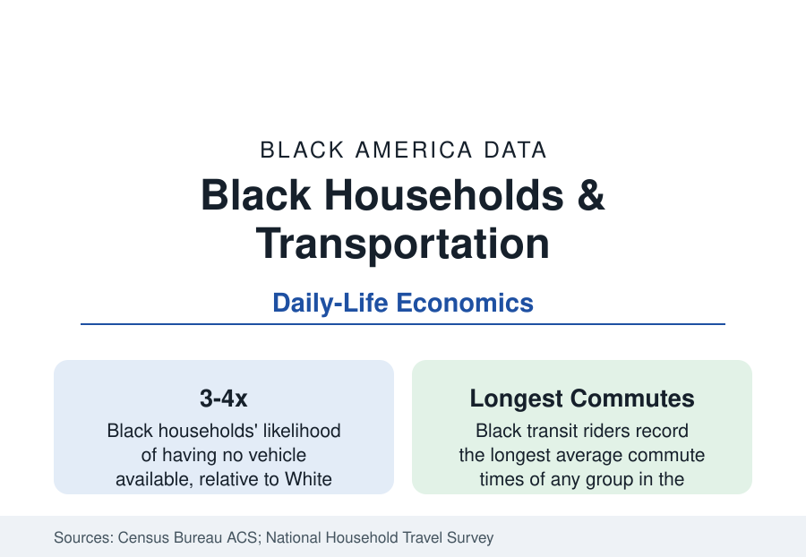

Black Census
Getting There: Black Households, Cars, and Transit
Black households are three to four times likelier to have no car — in a country built for drivers. The Census transportation and commuting data.

About one in eleven Black households has no vehicle available — three to four times the White household rate in the American Community Survey — in the most car-dependent society on earth. The consequences run through every file in this reference: the jobs reachable, the groceries bought, the appointments kept. Transportation is the connective tissue of the data, and this article reports its numbers.
Vehicle Access: The Distribution
The ACS vehicle-availability tables are stark by every cut: zero-vehicle Black households concentrate in the transit metros (New York's rate is the nation's extreme — a majority of Black households in the city are carless, by design of the transit system) and in the poor districts of every metro, while the Southern and suburban Black populations own cars at rates approaching the general population's — on thinner margins (older vehicles, higher insurance and financing costs in the consumer-finance data, the subprime auto market's demographics). The one-car household is the modal Black suburban condition: two earners, one vehicle, the logistics of the family files. The rural data invert the transit story — carlessness in the Black Belt approaches a mobility emergency (no transit exists to fall back on), and the elderly rural non-driver is the access file's hardest cell.
Commuting: Time as the Tax
The commute data price the distribution in hours. Black workers' mean commute times run the longest of any group in the ACS — driven by the transit riders' times (Black commuters form a large share of the nation's transit ridership, in the range of a quarter to a third of riders in the transit agency data, with bus riders — the system's slowest tier — the most heavily Black) and by the spatial mismatch the suburbanization file created: the jobs moved to the ring, the transit did not follow, and the reverse commute became the Black suburban worker's inheritance in the metros that built rail to downtown only. The Brookings access research quantified the result in its famous form: the typical metropolitan resident can reach only a fraction of the region's jobs within 45 minutes by transit, and the fraction for the Black districts runs lowest — the employment map as a time map. The pandemic's remote-work divide (the gig and service profiles' workers kept traveling) preserved the commute gap even as average times fell.
The Costs: Insurance, Fines, and the License File
Car access's price structure is its own disparity file. Auto insurance premiums in majority-Black ZIP codes run materially higher than in comparable-risk white areas in the Consumer Federation and ProPublica analyses (the credit-score and territory rating variables carrying the difference). The subprime auto lending market — the buy-here-pay-here lots of the auto-dealer profile — prices Black borrowers' credit at the finance profile's rates, with repossession as the default's consequence and job loss its sequel in the employment data. The fines-and-fees layer (license suspensions for unpaid fines — a population in the millions nationally in the legal-aid data, disproportionately Black, suspended for debt rather than driving) converts poverty into immobility through the DMV, and the license-restoration programs of the current reform era count their caseloads from this file.
Transit Systems and Their Riders
The transit data describe an essential infrastructure running on its riders' inverse image: systems designed historically for downtown commuters (the higher-income rail rider) funded by taxes on everyone, whose actual ridership — bus above all — is working-class and heavily Black, and whose service allocation (frequency, span, the suburb-to-core routes) is the local equity fight in every metro in this reference. The bus-priority and fare-policy data (fare-free pilots in several cities post-2020, their ridership effects measured) and the paratransit system (the disability profile's lifeline, its reliability data its own scandal file) complete the public side. The new mobility layer — ride-hail (whose wait-time and cancellation disparities the audit studies document), bikeshare and scooter systems (their service maps initially drawn around the Black districts, corrected under equity requirements in several cities) — inherits the geography it serves.
Reading the Transportation Data
Every statistic in this reference is downstream of a trip someone could or could not make: to the job, the store, the clinic, the campus. The transportation tables are therefore the section's hidden infrastructure — a three-to-four-times carlessness gap and the longest commutes in the nation, quietly taxing every other number. When the data elsewhere show a gap, this file usually holds part of the receipt.
More in Black Census
The Black Population of the United States: Size, Definitions, and Distribution
The Black population of the United States totals 52.8 million — 15.4 percent of the nation. How the Census Bureau defines and counts the population, and where it lives.
Black Median Household Income in the United States
Black median household income stands at $56,490 in the Census Bureau's annual income report — how the figure is measured, how it compares, and what drives it.
The Black Poverty Rate: Levels, Children, and the Long Trend
The official Black poverty rate is 17.1 percent — against 11.1 percent nationally and 7.7 percent for non-Hispanic White Americans. How poverty is measured and what the data show.
Source: U.S. Census Bureau, American Community Survey commuting and vehicle-availability data; Bureau of Transportation Statistics; National Household Travel Survey; Brookings metropolitan access research.